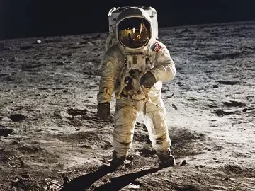
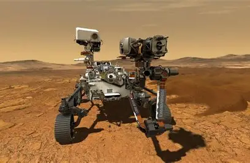
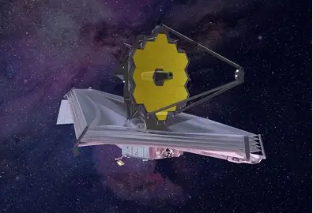

<!DOCTYPE html>
<html lang="en">
<head>
    <meta charset="UTF-8">
    <meta name="viewport" content="width=device-width, initial-scale=1.0">
    <link rel="stylesheet" href="../css/general.css">
    <link rel="stylesheet" href="../css/nasa.css">
    <title>Nasa</title>
</html>
<body>
    <nav class="menu-navegacion">
        <ul class="menu">
            <li class="inicio"><a href="../index.html">Via Lactea</a></li>
            <li class="sistema solar"><a href="sistemaSolar.html">Sistema Solar</a></li>
            <li class="planetas"><a href="planetas.html">Planetas</a></li>
            <li class="nasa"><a href="nasa.html">Nasa</a></li>
        </ul>
    </nav>
    <div class="nasaContenido">    
        <h1><a href="https://www.nasa.gov/" target="_blank">La Nasa</a></h1>
        <p>
            La NASA, conocida por su nombre completo como la Administración Nacional de Aeronáutica y del Espacio, es la agencia líder mundial en la exploración espacial y la investigación aeronáutica. Con más de 70 años de historia, esta agencia estadounidense ha desempeñado un papel fundamental en el avance de la ciencia y la tecnología, así como en la expansión de nuestro entendimiento del universo.            
            La NASA fue establecida en 1958 por el presidente Dwight D. Eisenhower, surgiendo de la National Advisory Committee for Aeronautics (NACA), una agencia de investigación aeronáutica. Su creación fue una respuesta directa al avance soviético en la carrera espacial, que culminó con el lanzamiento del Sputnik 1, el primer satélite artificial, por parte de la Unión Soviética en 1957. Desde entonces, la NASA se ha dedicado a la exploración del espacio y el desarrollo de tecnologías para la aviación y la investigación científica.
        </p>
        <h2>Funciones y Objetivos</h2>     
        <p>
            La NASA desempeña diversas funciones en el ámbito de la exploración espacial y la investigación científica. Una de sus funciones más destacadas es el programa espacial tripulado, que incluye la participación en la Estación Espacial Internacional (ISS), un proyecto conjunto con varios países lanzado en 1998. Además, la NASA ha enviado numerosas misiones a explorar el sistema solar y más allá, incluidos rovers en Marte y sondas que estudian otros planetas y cuerpos celestes.
            La agencia también realiza investigaciones en la Tierra, incluido el estudio de la atmósfera, el clima y el campo de gravedad del planeta. Gran parte del presupuesto de la NASA se destina a la investigación espacial y aeronáutica, lo que impulsa avances tecnológicos que benefician tanto a la exploración espacial como a la vida cotidiana.
        </p>
        <h2>Logros y Misiones Destacadas</h2>
        <p>
            A lo largo de su historia, la NASA ha logrado numerosos hitos que han marcado la exploración espacial. Entre estos logros se encuentran el programa Apolo, que llevó al primer hombre a la Luna en 1969, y las misiones de exploración en Marte, como el rover Curiosity, que ha estado operando en la superficie del planeta rojo desde 2012. Además, la NASA ha sido responsable de la operación de telescopios espaciales como el Hubble y su sucesor, el telescopio espacial James Webb, que han revolucionado nuestra comprensión del universo.
        </p>
            
            <h3>Apolo</h3>
            <p>Audio de la mision Apolo
                <audio controls loop class="audio">
                    <source src="../multimedia/audioApolo.mp3" type="audio/mpeg">
                </audio>
            </p>
            
            <h3>Rover en Marte</h3>
            
            <h3>Telescopio Hubble</h3>
            
            <h3>Telescopio James Webb</h3>
    </div>
</body>
</html>